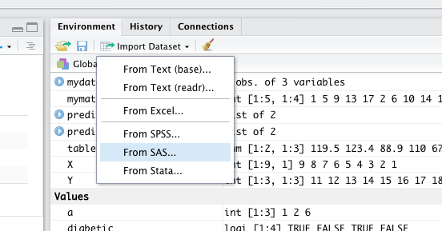

Chapter 35 R Lab 2 - Basics II
What we will review in this lab:
- Data frames and lists,
- Programming Basics.
35.1 Data frames and lists
We will begin with lists first to get them out of the way. Although they are not used much in the book, you should know about them.
35.1.1 Lists
A list is a one-dimensional heterogeneous data structure. So it is indexed like a vector with a single integer value, but each element can contain an element of any type. Lets look at some examples of working with them:
# creation
A <- list(42, "Hello", TRUE)
dim(A)## NULLstr(A)## List of 3
## $ : num 42
## $ : chr "Hello"
## $ : logi TRUEclass(A)## [1] "list"# Another one
B <- list(
a = c(1, 2, 3, 4),
b = TRUE,
c = "Hello!",
d = function(arg = 1) {print("Hello World!")},
X = matrix(0, 4 , 4)
)
B## $a
## [1] 1 2 3 4
##
## $b
## [1] TRUE
##
## $c
## [1] "Hello!"
##
## $d
## function(arg = 1) {print("Hello World!")}
##
## $X
## [,1] [,2] [,3] [,4]
## [1,] 0 0 0 0
## [2,] 0 0 0 0
## [3,] 0 0 0 0
## [4,] 0 0 0 0dim(B)## NULLdim(B$X)## [1] 4 4str(B)## List of 5
## $ a: num [1:4] 1 2 3 4
## $ b: logi TRUE
## $ c: chr "Hello!"
## $ d:function (arg = 1)
## ..- attr(*, "srcref")= 'srcref' int [1:8] 12 15 12 55 15 55 12 12
## .. ..- attr(*, "srcfile")=Classes 'srcfilecopy', 'srcfile' <environment: 0x7fde394823b0>
## $ X: num [1:4, 1:4] 0 0 0 0 0 0 0 0 0 0 ...class(B)## [1] "list"
Source: https://stats.idre.ucla.edu/stat/data/intro_r/intro_r.html#(27)
Lists can be subset using two syntaxes, the $ operator, and square brackets [ ]. The $ operator returns a named element of a list. The [ ] syntax returns a list, while the [[ ]] returns an element of a list.
#For example to get the matrix in our list
B$X## [,1] [,2] [,3] [,4]
## [1,] 0 0 0 0
## [2,] 0 0 0 0
## [3,] 0 0 0 0
## [4,] 0 0 0 0#or
B[5]## $X
## [,1] [,2] [,3] [,4]
## [1,] 0 0 0 0
## [2,] 0 0 0 0
## [3,] 0 0 0 0
## [4,] 0 0 0 0#or
B[[5]]## [,1] [,2] [,3] [,4]
## [1,] 0 0 0 0
## [2,] 0 0 0 0
## [3,] 0 0 0 0
## [4,] 0 0 0 0#And to get the (1,3) element of matrix X in list B
B[[5]][1,3]## [1] 035.1.2 Data Frames
We have seen vectors, matrices, and lists for storing data. We will now introduce a data frame that is the most common way to store and interact with data in this book. Datasets for statistical analysis are typically stored in data frames in R. Unlike a matrix, a data frame can have different data types for each elements (columns). A data frame is a list of vectors (columns - you can think of them as “variables”). So, each vector (column) must contain the same data type, but the different vectors (columns) can store different data types.
However, unlike a list, the columns (elements) of a data frame must all be vectors and have the same length (number of observations)

Data frames combine the features of matrices and lists.
Like matrices, dataframes are rectangular, where the columns are variables and the rows are observations of those variables. like lists, dataframes can have elements (column vectors) of different data types (some double, some character, etc.) – but they must be equal length. Real datasets usually combine variables of different types, so data frames are well suited for storage.
#One way to do that
mydata <- data.frame(diabetic = c(TRUE, FALSE, TRUE, FALSE),
height = c(65, 69, 71, 73))
mydata## diabetic height
## 1 TRUE 65
## 2 FALSE 69
## 3 TRUE 71
## 4 FALSE 73str(mydata)## 'data.frame': 4 obs. of 2 variables:
## $ diabetic: logi TRUE FALSE TRUE FALSE
## $ height : num 65 69 71 73dim(mydata)## [1] 4 2#Or create vectors for each column
diabetic = c(TRUE, FALSE, TRUE, FALSE)
height = c(65, 69, 71, 73)
#And include them in a dataframe as follows
mydata <- data.frame(diabetic, height)
mydata## diabetic height
## 1 TRUE 65
## 2 FALSE 69
## 3 TRUE 71
## 4 FALSE 73str(mydata)## 'data.frame': 4 obs. of 2 variables:
## $ diabetic: logi TRUE FALSE TRUE FALSE
## $ height : num 65 69 71 73dim(mydata)## [1] 4 2#And more importantly, you can extend it by adding more columns
weight = c(103, 45, 98.4, 70.5)
mydata <- data.frame(mydata, weight)
mydata## diabetic height weight
## 1 TRUE 65 103.0
## 2 FALSE 69 45.0
## 3 TRUE 71 98.4
## 4 FALSE 73 70.5You will have the following mistake a lot. Let’s see it now so you can avoid it later.
#Try running the code below separately without the comment # and see what happens
#mydata <- data.frame(diabetic = c(TRUE, FALSE, TRUE, FALSE, FALSE),
#height = c(65, 69, 71, 73))The problem in the example above is that there are a different number of rows and columns. Here are some useful tools for diagnosing this problem:
#Number of columns
ncol(mydata)## [1] 3nrow(mydata)## [1] 4Often data you’re working with has abstract column names, such as (x1, x2, x3…).The dataset cars is data from the 1920s on “Speed and Stopping Distances of Cars”. There is only 2 columns shown below.
colnames(datasets::cars)## [1] "speed" "dist"#Using Base r:
colnames(cars)[1:2] <- c("Speed (mph)", "Stopping Distance (ft)")
colnames(cars)## [1] "Speed (mph)" "Stopping Distance (ft)"#Using GREP:
colnames(cars)[grep("dist", colnames(cars))] <- "Stopping Distance (ft)"
colnames(cars)## [1] "Speed (mph)" "Stopping Distance (ft)"35.1.3 Reading (importing) and writting (exporting) data files
When you read a data in other formats, they may also be imported as a data frame.
How can we import data into R?
The simple way is here:

If the data is a .csv file, for example, we would also use the read_csv() function from the readr package. Note that R has a built in function read.csv() that operates very similarly. The readr function read_csv() has a number of advantages. For example, it is much faster reading larger data. It also uses the tibble package to read the data as a tibble.
# library(readr)
# library(RCurl)
# x <- getURL("https://raw.githubusercontent.com/tidyverse/readr/main/inst/extdata/mtcars.csv")
# example_csv = read_csv(x, show_col_types = FALSE)
# head(example_csv)
# str(example_csv)A tibble is simply a data frame that prints with sanity. Notice in the output above that we are given additional information such as dimension and variable type.
The as_tibble() function can be used to coerce a regular data frame to a tibble.
# library(tibble)
# example_data = as_tibble(example_csv)
# example_dataIt is important to note that while matrices have rows and columns, data frames (tibbles) instead have observations and variables. When displayed in the console or viewer, each row is an observation and each column is a variable. read_csv() assigns the data frame to a class called tibble, a tidyverse structure that slightly alters how data frames behave, such as when they are being created or printed. Tibbles are still data frames, and will work in most functions that require data frame inputs.
By default, tibbles only show the first ten rows of as many columns as will fit on screen. We also see the column types. We can create tibbles manually in a nearly identical manner to data frames with tibble().
To convert a tibble to a regular data frame (to print the whole data set, for example), use as.data.frame().
To understand more about the data set, we use the ? operator to pull up the documentation for the data. (You can use ?? to search the Internet for more info)
# ?mtcars
# #Results are not shown here
#
# #To access each column
# example_data$mpg
# #or
# example_data[,1]After importing our data, a quick glance at the dataset can often tell us if the data were read in correctly.
Use head() and tail() to look at a specified number of rows at the beginning or end of a dataset, respectively.
Use View() on a dataset to open a spreadsheet-style view of a dataset. In RStuido, clicking on a dataset in the Environment pane will View() it.
We can export our data in a number of formats, including text, Excel .xlsx, and in other statistical software formats like Stata .dta, using write_functions that reverse the operations of the read_functions.
Multiple objects can be stored in an R binary file (usally extension “.Rdata”) with save() and then later loaded with load().
I did not specify realistic path names below.
- Excel .csv file:
write_csv(dat_csv, file = "path/to/save/filename.csv") - Stata .dta file:
write_dta(dat_csv, file = "path/to/save/filename.dta") - save these objects to an .Rdata file:
save(dat_csv, mydata, file="path/to/save/filename.Rdata")
One last thing: if you want to save the entire workspace, save.image() is just a short-cut for ‘save my current workspace’, i.e., save(list = ls(all.names = TRUE), file = ".RData", envir = .GlobalEnv). It is also what happens with q("yes").
35.1.4 Subsetting Data Frames
Subsetting data frames can work much like subsetting matrices using square brackets, [,]. Let’s use another data given in the ggplot2 library.
library(ggplot2)
head(mpg, n = 10)## # A tibble: 10 × 11
## manufacturer model displ year cyl trans drv cty hwy fl class
## <chr> <chr> <dbl> <int> <int> <chr> <chr> <int> <int> <chr> <chr>
## 1 audi a4 1.8 1999 4 auto… f 18 29 p comp…
## 2 audi a4 1.8 1999 4 manu… f 21 29 p comp…
## 3 audi a4 2 2008 4 manu… f 20 31 p comp…
## 4 audi a4 2 2008 4 auto… f 21 30 p comp…
## 5 audi a4 2.8 1999 6 auto… f 16 26 p comp…
## 6 audi a4 2.8 1999 6 manu… f 18 26 p comp…
## 7 audi a4 3.1 2008 6 auto… f 18 27 p comp…
## 8 audi a4 quattro 1.8 1999 4 manu… 4 18 26 p comp…
## 9 audi a4 quattro 1.8 1999 4 auto… 4 16 25 p comp…
## 10 audi a4 quattro 2 2008 4 manu… 4 20 28 p comp…mpg[mpg$hwy > 35, c("manufacturer", "model", "year")]## # A tibble: 6 × 3
## manufacturer model year
## <chr> <chr> <int>
## 1 honda civic 2008
## 2 honda civic 2008
## 3 toyota corolla 2008
## 4 volkswagen jetta 1999
## 5 volkswagen new beetle 1999
## 6 volkswagen new beetle 1999An alternative would be to use the subset() function, which has a much more readable syntax.
subset(mpg, subset = hwy > 35, select = c("manufacturer", "model", "year"))## # A tibble: 6 × 3
## manufacturer model year
## <chr> <chr> <int>
## 1 honda civic 2008
## 2 honda civic 2008
## 3 toyota corolla 2008
## 4 volkswagen jetta 1999
## 5 volkswagen new beetle 1999
## 6 volkswagen new beetle 1999Lastly, we could use the filter and select functions from the dplyr package which introduces the %>% operator from the magrittr package. This is not necessary for this book, however the dplyr package is something you should be aware of as it is becoming a popular tool in the R world.
# library(dplyr)
# mpg %>% filter(hwy > 35) %>% select(manufacturer, model, year)35.1.5 Plotting from data frame
There are many good ways and packages for plotting. I’ll show you one here. Visualizing the relationship between multiple variables can get messy very quickly. Here is the ggpairs() function in the GGally package (Tay_2019?).
library(fueleconomy) #install.packages("fueleconomy")
data(vehicles)
df <- vehicles[1:100, ]
str(df)## tibble [100 × 12] (S3: tbl_df/tbl/data.frame)
## $ id : num [1:100] 13309 13310 13311 14038 14039 ...
## $ make : chr [1:100] "Acura" "Acura" "Acura" "Acura" ...
## $ model: chr [1:100] "2.2CL/3.0CL" "2.2CL/3.0CL" "2.2CL/3.0CL" "2.3CL/3.0CL" ...
## $ year : num [1:100] 1997 1997 1997 1998 1998 ...
## $ class: chr [1:100] "Subcompact Cars" "Subcompact Cars" "Subcompact Cars" "Subcompact Cars" ...
## $ trans: chr [1:100] "Automatic 4-spd" "Manual 5-spd" "Automatic 4-spd" "Automatic 4-spd" ...
## $ drive: chr [1:100] "Front-Wheel Drive" "Front-Wheel Drive" "Front-Wheel Drive" "Front-Wheel Drive" ...
## $ cyl : num [1:100] 4 4 6 4 4 6 4 4 6 5 ...
## $ displ: num [1:100] 2.2 2.2 3 2.3 2.3 3 2.3 2.3 3 2.5 ...
## $ fuel : chr [1:100] "Regular" "Regular" "Regular" "Regular" ...
## $ hwy : num [1:100] 26 28 26 27 29 26 27 29 26 23 ...
## $ cty : num [1:100] 20 22 18 19 21 17 20 21 17 18 ...Let’s see how GGally::ggpairs() visualizes relationships between quantitative variables:
library(GGally) #install.packages("GGally")
new_df <- df[, c("cyl", "hwy", "cty")]
ggpairs(new_df)The visualization changes a little when we have a mix of quantitative and categorical variables. Below, fuel is a categorical variable while hwy is a quantitative variable.
mixed_df <- df[, c("fuel", "hwy")]
ggpairs(mixed_df)
35.1.6 Some useful functions
my_data <- data.frame(a=1:10, b=rnorm(10, 2, 5))
# Cut a continuous variable into intervals with new integer
my_data$c <- cut(my_data$b, 3)
str(my_data)## 'data.frame': 10 obs. of 3 variables:
## $ a: int 1 2 3 4 5 6 7 8 9 10
## $ b: num -5.721 -2.029 -11.535 4.721 -0.503 ...
## $ c: Factor w/ 3 levels "(-11.6,-3.72]",..: 1 2 1 3 2 2 2 3 3 2# Standardizes variable (subtracts mean and divides by standard deviation)
my_data$d <- scale(my_data$a)
str(my_data)## 'data.frame': 10 obs. of 4 variables:
## $ a: int 1 2 3 4 5 6 7 8 9 10
## $ b: num -5.721 -2.029 -11.535 4.721 -0.503 ...
## $ c: Factor w/ 3 levels "(-11.6,-3.72]",..: 1 2 1 3 2 2 2 3 3 2
## $ d: num [1:10, 1] -1.486 -1.156 -0.826 -0.495 -0.165 ...
## ..- attr(*, "scaled:center")= num 5.5
## ..- attr(*, "scaled:scale")= num 3.03# lag, lead and cumulative sum a variable
library(dplyr)
my_data$f <- lag(my_data$d, n=1L)
my_data$g <- lead(my_data$d, n=1L)
my_data$h <- cumsum(my_data$d)
my_data## a b c d f g h
## 1 1 -5.7205901 (-11.6,-3.72] -1.4863011 NA -1.1560120 -1.486301
## 2 2 -2.0293440 (-3.72,4.1] -1.1560120 -1.4863011 -0.8257228 -2.642313
## 3 3 -11.5354045 (-11.6,-3.72] -0.8257228 -1.1560120 -0.4954337 -3.468036
## 4 4 4.7212605 (4.1,11.9] -0.4954337 -0.8257228 -0.1651446 -3.963470
## 5 5 -0.5031815 (-3.72,4.1] -0.1651446 -0.4954337 0.1651446 -4.128614
## 6 6 1.9061354 (-3.72,4.1] 0.1651446 -0.1651446 0.4954337 -3.963470
## 7 7 3.5532300 (-3.72,4.1] 0.4954337 0.1651446 0.8257228 -3.468036
## 8 8 11.7688430 (4.1,11.9] 0.8257228 0.4954337 1.1560120 -2.642313
## 9 9 11.9161919 (4.1,11.9] 1.1560120 0.8257228 1.4863011 -1.486301
## 10 10 3.5084072 (-3.72,4.1] 1.4863011 1.1560120 NA 0.00000035.1.7 Categorical Variables in Data Frames
Let’s create a very simple data frame.
b <- data.frame(gender=c("male", "female", "female",
"female", "female", "male"),
numbers=c(1,2,3, 0.5, 11, -1))
b## gender numbers
## 1 male 1.0
## 2 female 2.0
## 3 female 3.0
## 4 female 0.5
## 5 female 11.0
## 6 male -1.0dim(b)## [1] 6 2str(b)## 'data.frame': 6 obs. of 2 variables:
## $ gender : chr "male" "female" "female" "female" ...
## $ numbers: num 1 2 3 0.5 11 -1Why does say “levels” in the output? Because by default, character vectors are converted to factors in data.frame().
If you want to convert them to back to characters.
table(b$gender) # Distribution of gender##
## female male
## 4 2# back to character
b$gender <- as.character(b$gender)
str(b)## 'data.frame': 6 obs. of 2 variables:
## $ gender : chr "male" "female" "female" "female" ...
## $ numbers: num 1 2 3 0.5 11 -1# back to factor
b$gender <- as.factor(b$gender)
str(b)## 'data.frame': 6 obs. of 2 variables:
## $ gender : Factor w/ 2 levels "female","male": 2 1 1 1 1 2
## $ numbers: num 1 2 3 0.5 11 -135.2 Programming Basics
In this section we see three main applications: conditional flows, loops, and functions, that are main pillars of any type of programming.
35.2.1 if/Else
The main syntax is as follows
if (condition) {
some R code
} else {
more R code
}
Here is a simple example:
x <- c("what","is","truth")
if("Truth" %in% x) {
print("Truth is found")
} else {
print("Truth is not found")
}## [1] "Truth is not found"How about this:
x <- c(1, 4, 4)
a <- 3
#Here is a nice if/Else
if(length(x[x==a])>0) {
print(paste("x has", length(x[x==a]), a))
} else {
print(paste("x doesn't have any", a))
}## [1] "x doesn't have any 3"#Another one with pipping
a <- 4
if(a %in% x) {
print(paste("x has", length(x[x==a]), a))
} else {
print(paste("x doesn't have any", a))
}## [1] "x has 2 4"Nested conditions:
#Change the numbers to see all conditions
x <- 0
y <- 4
if (x == 0 & y!= 0) {
print("a number cannot be divided by zero")
} else if (x == 0 & y == 0) {
print("a zero cannot be divided by zero")
} else {
a <- y/x
print(paste("y/x = ", a))
}## [1] "a number cannot be divided by zero"A simpler, one-line ifelse!
#Change the numbers
x <- 0
y <- 4
ifelse (x > y, "x is bigger than y", "y is bigger than x")## [1] "y is bigger than x"#more, because the ifelse will fail if x = y. Try it!
ifelse (x == y, "x is the same as y",
ifelse(x > y, "x is bigger than y", "y is bigger than x"))## [1] "y is bigger than x"A simpler, without else!
z <- 0
w <- 4
if(z > w) print("w is bigger than z")
#Change the numbers
x <- 5
y <- 3
if(x > y) print("x is bigger than y")## [1] "x is bigger than y"#See that both of them moves to the next line.Building multiple conditions without else (it’s a silly example!):
z <- 0
w <- 4
x <- 5
y <- 3
if(z > w) print("z is bigger than w")
if(w > z) print("w is bigger than z")## [1] "w is bigger than z"if(x > y) print("x is bigger than y")## [1] "x is bigger than y"if(y > x) print("y is bigger than x")
if(z > x) print("z is bigger than x")
if(x > z) print("x is bigger than z")## [1] "x is bigger than z"if(w > y) print("w is bigger than y")## [1] "w is bigger than y"if(y > w) print("y is bigger than w")
#Try it with if-else.The ifelse() function only allows for one “if” statement, two cases. You could add nested “if” statements, but that’s just a pain, especially if the 3+ conditions you want to use are all on the same level, conceptually. Is there a way to specify multiple conditions at the same time?
dplyr() is the most powerful library for data management. When you have time, read more about it!
Source: https://stats.idre.ucla.edu/stat/data/intro_r/intro_r.html#(35)
#Let's create a data frame:
df <- data.frame("name"=c("Kaija", "Ella", "Andis"), "test1" = c(FALSE, TRUE, TRUE),
"test2" = c(FALSE, FALSE, TRUE))
df## name test1 test2
## 1 Kaija FALSE FALSE
## 2 Ella TRUE FALSE
## 3 Andis TRUE TRUE# Suppose we want separate the people into three groups:
#People who passed both tests: Group A
#People who passed one test: Group B
#People who passed neither test: Group C
#dplyr has a function for exactly this purpose: case_when().
library(dplyr)
df <- df %>%
mutate(group = case_when(test1 & test2 ~ "A", # both tests: group A
xor(test1, test2) ~ "B", # one test: group B
!test1 & !test2 ~ "C" # neither test: group C
))
df## name test1 test2 group
## 1 Kaija FALSE FALSE C
## 2 Ella TRUE FALSE B
## 3 Andis TRUE TRUE A35.2.2 Loops
What would you do if you needed to execute a block of code multiple times? In general, statements are executed sequentially. A loop statement allows us to execute a statement or group of statements multiple times and the following is the general form of a loop statement in most programming languages. There are 3 main loop types: while(), for(), repeat().
Here are some examples for for() loop:
x <- c(3, -1, 4, 2, 10, 5)
for (i in 1:length(x)) {
x[i] <- x[i] * 2
}
x## [1] 6 -2 8 4 20 10Note that this just for an example. If we want to multiply each element of a vector by 2, a loop isn’t the best way. Although it is very normal in many programming languages, we would simply use a vectorized operation in R.
x <- c(3, -1, 4, 2, 10, 5)
x <- x * 2
x## [1] 6 -2 8 4 20 10But some times it would be very handy:
# If the element in x is not zero, multiply it with the subsequent element
x <- c(3, -1, 4, 2, 10, 5)
for (i in 1:(length(x)-1)) {
ifelse(x[i] > 0, x[i] <- x[i] * x[i + 1], x[i] <- 0)
}
x## [1] -3 0 8 20 50 5Here are some examples for while() loop:
# Let's use our first example
x <- 3
cnt <- 1
while (cnt < 11) {
x = x * 2
cnt = cnt + 1
}
x## [1] 3072Here are some examples for repeat() loop:
# Let's use our first example
x <- 3
cnt <- 1
repeat {
x = x * 2
cnt = cnt + 1
if(cnt > 10) break
}
x## [1] 307235.2.3 The apply() family
The apply() family is one of the R base packages and is populated with functions to manipulate slices of data from matrices, arrays, lists and data frames in a repetitive way. These functions allow crossing the data in a number of ways and avoid explicit use of loop constructs. They act on an input list, matrix or array and apply a named function with one or several optional arguments. The family is made up of the apply(), lapply() , sapply(), vapply(), mapply(), rapply(), and tapply() functions.
35.2.3.1 apply()
The R base manual tells you that it’s called as follows: apply(X, MARGIN, FUN, ...), where, X is an array or a matrix if the dimension of the array is 2; MARGIN is a variable defining how the function is applied: when MARGIN=1, it applies over rows, whereas with MARGIN=2, it works over columns. Note that when you use the construct MARGIN=c(1,2), it applies to both rows and columns; and FUN, which is the function that you want to apply to the data. It can be any R function, including a User Defined Function (UDF).
# Construct a 5x6 matrix
X <- matrix(rnorm(30), nrow=5, ncol=6)
# Sum the values of each column with `apply()`
apply(X, 2, sum)## [1] 1.63313214 -2.28558962 -1.67774549 3.02675706 -0.02418322 -0.38005485apply(X, 2, length)## [1] 5 5 5 5 5 5apply(X, 1, length)## [1] 6 6 6 6 6apply(X, 2, function (x) length(x)-1)## [1] 4 4 4 4 4 4#If you don’t want to write a function inside of the arguments
len <- function(x){
length(x)-1
}
apply(X,2, len)## [1] 4 4 4 4 4 4#It can also be used to repeat a function on cells within a matrix
X_new <- apply(X, 1:2, function(x) x+3)
X_new## [,1] [,2] [,3] [,4] [,5] [,6]
## [1,] 3.425800 1.813185 1.157967 3.952250 3.199630 2.548169
## [2,] 4.340268 2.422338 2.522118 2.125970 3.489867 1.874287
## [3,] 1.614724 3.297379 2.979718 4.745105 2.175204 3.928882
## [4,] 3.817709 1.259799 4.576702 3.556041 2.038167 2.066095
## [5,] 3.434631 3.921709 2.085750 3.647391 4.072949 4.202512Since apply() is used only for matrices, if you apply apply() to a data frame, it first coerces your data.frame to an array which means all the columns must have the same type. Depending on your context, this could have unintended consequences. For a safer practice in data frames, we can use lappy() and sapply():
35.2.3.2 lapply()
You want to apply a given function to every element of a list and obtain a list as a result. When you execute ?lapply, you see that the syntax looks like the apply() function. The difference is that it can be used for other objects like data frames, lists or vectors. And the output returned is a list (which explains the “l” in the function name), which has the same number of elements as the object passed to it. lapply() function does not need MARGIN.
A<-c(1:9)
B<-c(1:12)
C<-c(1:15)
my.lst<-list(A,B,C)
lapply(my.lst, sum)## [[1]]
## [1] 45
##
## [[2]]
## [1] 78
##
## [[3]]
## [1] 12035.2.3.3 sapply()
sapply works just like lapply, but will simplify the output if possible. This means that instead of returning a list like lapply, it will return a vector instead if the data is simplifiable.
A<-c(1:9)
B<-c(1:12)
C<-c(1:15)
my.lst<-list(A,B,C)
sapply(my.lst, sum)## [1] 45 78 12035.2.3.4 tapply()
Sometimes you may want to perform the apply function on some data, but have it separated by factor. In that case, you should use tapply. Let’s take a look at the information for tapply.
X <- matrix(c(1:10, 11:20, 21:30), nrow = 10, ncol = 3)
tdata <- as.data.frame(cbind(c(1,1,1,1,1,2,2,2,2,2), X))
colnames(tdata)## [1] "V1" "V2" "V3" "V4"tapply(tdata$V2, tdata$V1, mean)## 1 2
## 3 8What we have here is an important tool: We have a conditional mean of column 2 (V2) with respect to column 1 (V1). You can use tapply to do some quick summary statistics on a variable split by condition.
summary <- tapply(tdata$V2, tdata$V1, function(x) c(mean(x), sd(x)))
summary## $`1`
## [1] 3.000000 1.581139
##
## $`2`
## [1] 8.000000 1.58113935.2.3.5 mapply()
mapply() would be used to create a new variable. For example, using dataset tdata, we could divide one column by another column to create a new value. This would be useful for creating a ratio of two variables as shown in the example below.
tdata$V5 <- mapply(function(x, y) x/y, tdata$V2, tdata$V4)
tdata$V5## [1] 0.04761905 0.09090909 0.13043478 0.16666667 0.20000000 0.23076923
## [7] 0.25925926 0.28571429 0.31034483 0.3333333335.2.4 Functions
An R function is created by using the keyword function. The basic syntax of an R function definition is as follows:
To use a function, you simply type its name, followed by an open parenthesis, then specify values of its arguments, then finish with a closing parenthesis. An argument is a variable which is used in the body of the function. Specifying the values of the arguments is essentially providing the inputs to the function. Let’s write our first function:
first <- function(a){
b <- a ^ 2
return(b)
}
first(1675)## [1] 2805625Let’s have a function that find the z-score (standardization). That’s subtracting the sample mean, and dividing by the sample standard deviation.
\[ \frac{x-\overline{x}}{s} \]
z_score <- function(x){
m <- mean(x)
std <- sd(x)
z <- (x - m)/std
z
}
set.seed(1)
x <- rnorm(10, 3, 30)
z <- z_score(x)
z## [1] -0.97190653 0.06589991 -1.23987805 1.87433300 0.25276523 -1.22045645
## [7] 0.45507643 0.77649606 0.56826358 -0.56059319#to check it out
round(mean(z), 4)## [1] 0sd(z)## [1] 1We can do a better job in writing z_score()
z_score <- function(x){
z <- (x - mean(x))/sd(x)
}
set.seed(1)
x <- rnorm(10, 3, 30)
z <- z_score(x)
z## [1] -0.97190653 0.06589991 -1.23987805 1.87433300 0.25276523 -1.22045645
## [7] 0.45507643 0.77649606 0.56826358 -0.56059319Lets create a function that prints the factorials:
fact <- function(a){
b <- 1
for (i in 1:(a-1)) {
b <- b*(i+1)
}
b
}
fact(5)## [1] 120Creating loops is an act of art and requires very careful thinking. The same loop can be done by many different structures. And it always takes more time to understand somebody else’s loop than your own!
35.2.4.1 outer()
outer() takes two vectors and a function (that itself takes two arguments) and builds a matrix by calling the given function for each combination of the elements in the two vectors.
x <- c(0, 1, 2)
y <- c(0, 1, 2, 3, 4)
m <- outer (
y, # First dimension: the columns (y)
x, # Second dimension: the rows (x)
function (x, y) x+2*y
)
m## [,1] [,2] [,3]
## [1,] 0 2 4
## [2,] 1 3 5
## [3,] 2 4 6
## [4,] 3 5 7
## [5,] 4 6 8In place of the function, an operator can be given, which makes it easy to create a matrix with simple calculations (such as multiplying):
m <- outer(c(10, 20, 30, 40), c(2, 4, 6), "*")
m## [,1] [,2] [,3]
## [1,] 20 40 60
## [2,] 40 80 120
## [3,] 60 120 180
## [4,] 80 160 240It becomes very handy when we build a polynomial model:
x <- sample(0:20, 10, replace = TRUE)
x## [1] 8 14 20 4 8 13 4 4 1 9m <- outer(x, 1:4, "^")
m## [,1] [,2] [,3] [,4]
## [1,] 8 64 512 4096
## [2,] 14 196 2744 38416
## [3,] 20 400 8000 160000
## [4,] 4 16 64 256
## [5,] 8 64 512 4096
## [6,] 13 169 2197 28561
## [7,] 4 16 64 256
## [8,] 4 16 64 256
## [9,] 1 1 1 1
## [10,] 9 81 729 6561